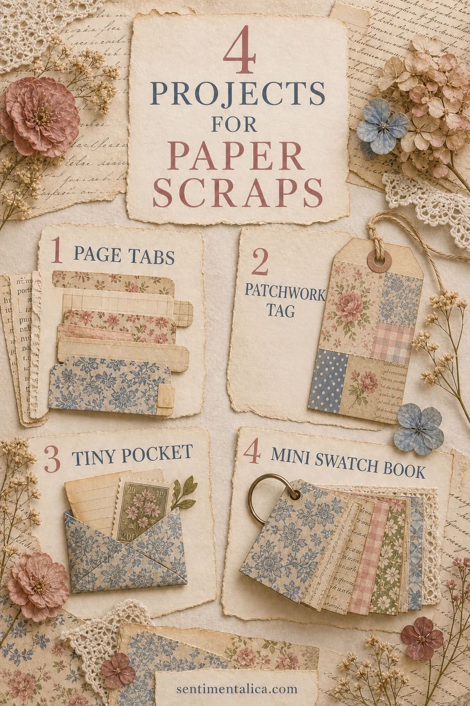
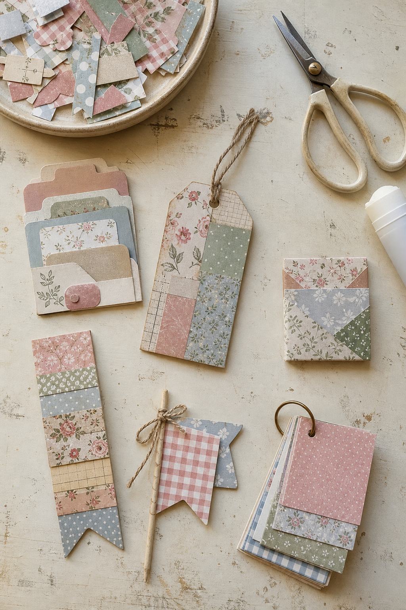
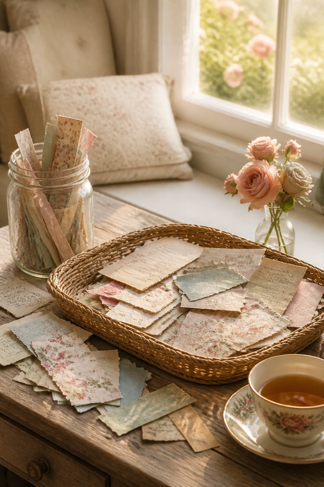
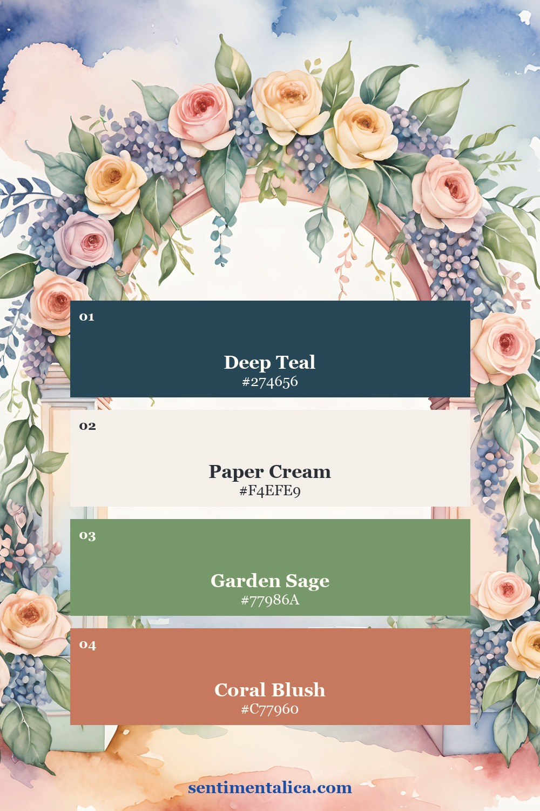
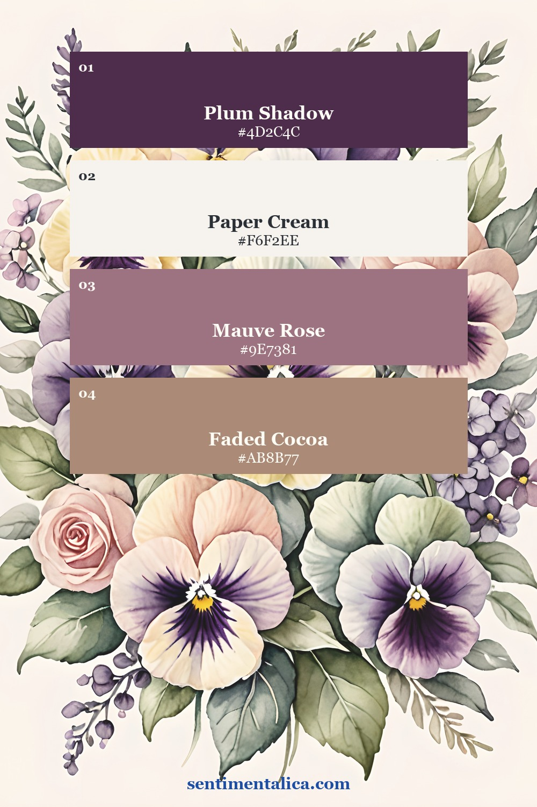
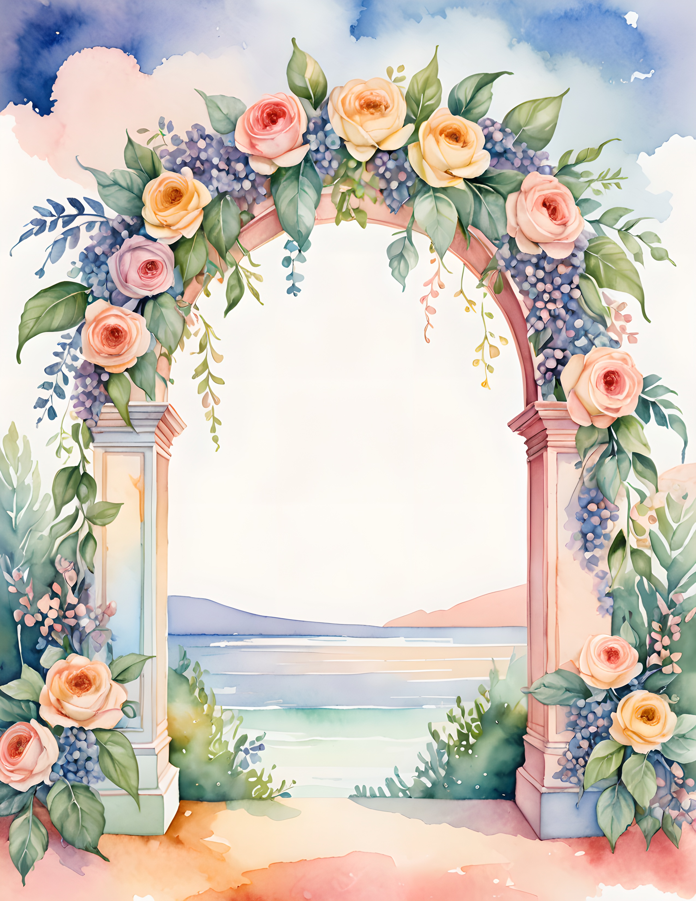
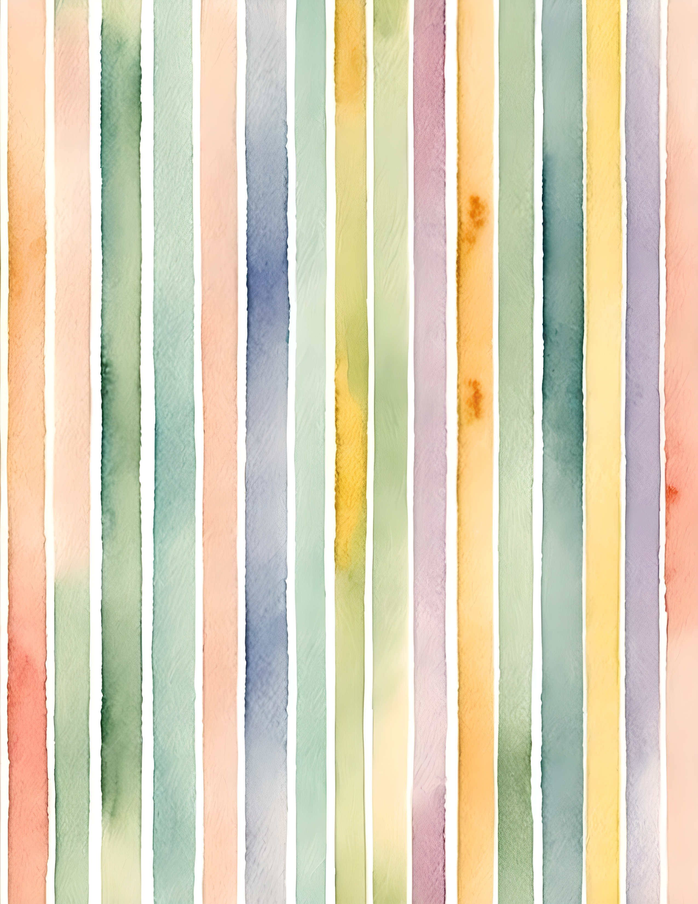
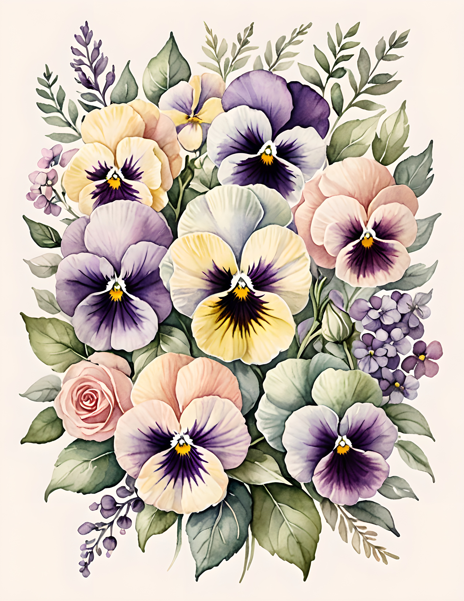

Pretty paper scraps are hard to throw away and surprisingly easy to forget. The useful solution is not a larger scrap box. It is a small menu of repeatable projects. Sort leftovers by shape, make one useful object from each group, and return only the pieces you genuinely want to keep.

Long strips become tabs and collage bridges
Fold a strip over the edge of a page to make a tab, or glue two contrasting strips together before folding for more strength. Keep the visible end short so it does not catch when the journal closes. A handwritten word, tiny stamped mark, or simple color block is enough.
Very narrow strips work as collage bridges. Place one across the gap between two larger pieces so their colors feel connected. Try the strip vertically, horizontally, and slightly off-center before gluing.
Medium rectangles become patchwork tags
Arrange three to five scraps on a plain tag base. Begin with the largest quiet piece, add one patterned piece, then finish with a small focal fragment. Let the joins remain visible. Patchwork is most interesting when it looks assembled rather than disguised.
Punch the hole after the layers are dry. Leave the back plain for a date, gift message, reading note, or short memory. If the front already has several patterns, choose one simple thread or ribbon instead of adding another print.

Quiet pieces become pockets and gift flags
A small rectangle with a calm center can become a pocket. Fold the sides and bottom inward by about 1 cm, trim the overlapping corners, and glue the flaps to a page or card. Place a tiny note, receipt, photograph, or pressed flower inside.
For a gift flag, fold a scrap around twine or a thin paper stem and trim a shallow V from the loose end. One flag can label a parcel; several can become a miniature bunting strip. Keep them small enough that the paper still feels like a rescued detail.
Colorful squares become a mini swatch book
Cut several scraps to one size, stack them, and punch one corner. Join them with a small metal ring or thread. Use the booklet as a portable palette reference, a place for ink tests, or a tiny record of papers already used in a larger project.
Do not worry if every square has a different pattern. Repetition of size creates order. If the stack feels busy, insert one cream or old-book-paper square between every two colorful pieces.

Use a simple scrap-sorting rule
Keep only three containers: strips, useful shapes, and tiny fragments. When one container fills, make a project before adding more. This turns the box into a creative prompt instead of a permanent storage problem.
If you want material for a low-pressure practice session, print a few images from the 100 free floral pictures from Sentimentalica. Cut the margins and test print pieces into tabs, tags, and pockets before using a favorite paid page.
Two soft palettes for mixing leftovers
Pastel Drift combines deep teal, paper cream, sage, and coral blush. Cottage Mist moves toward plum, mauve, and faded cocoa. Choose one palette as the anchor for a scrap session, then allow only one unexpected accent from outside it.


See the real printable pages
Pastel Drift brings watercolor roses and gentle blue, peach, and green movement. Cottage Mist offers pansies, roses, and quiet cottage color. These genuine customer pages show how small leftovers from different images can still belong together.



Choose one container of scraps and finish one tiny object before sorting anything else. A useful tab or pocket is often all the proof you need that the leftovers deserve a second life. Find more gentle paper projects in the Sentimentalica journal.